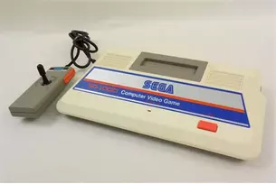
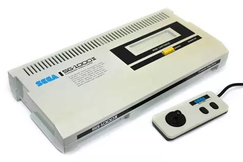
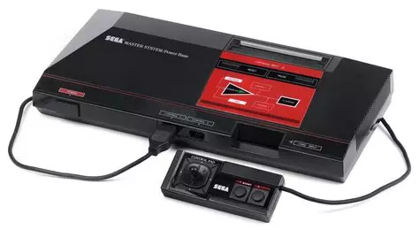
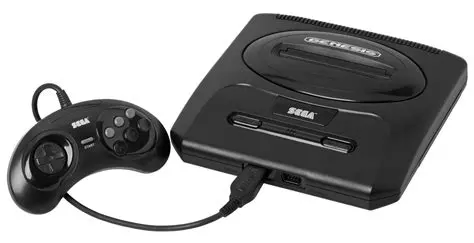
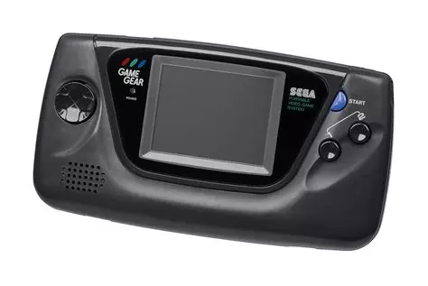
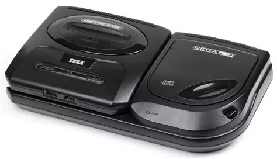
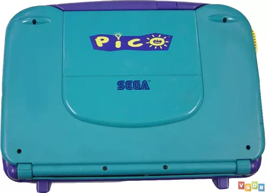
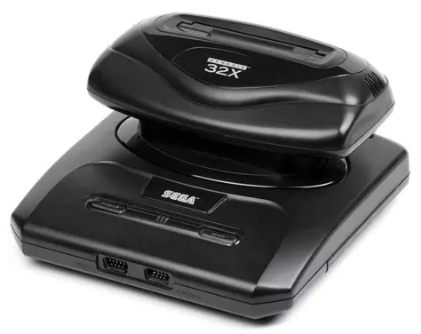
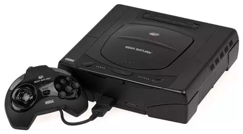
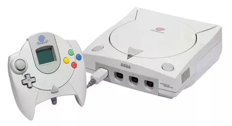

Le Sega SG-1000 est une console de jeux vidéo domestique sortie par Sega en 1983. Il s'agit de la première incursion de Sega sur le marché des consoles de salon, précédant la plus célèbre Sega Master System. Le SG-1000 a été commercialisé au Japon, en Australie et dans d'autres régions sélectionnées, mais il n'a pas connu un succès significatif en dehors du Japon. La console présentait des caractéristiques matérielles similaires à d'autres consoles de son époque, telles que l'Atari 2600 et l'Intellivision. Elle était équipée d'un processeur Zilog Z80 fonctionnant à 3,58 MHz, et ses capacités graphiques étaient relativement modestes, produisant des graphismes 2D simples avec une palette de couleurs limitée. Le SG-1000 disposait d'une petite bibliothèque de jeux, comprenant des ports d'arcade et des titres originaux. Certains jeux notables pour le système incluent "Hang-On", "Alex Kidd in Miracle World" et "Zaxxon". Bien que le SG-1000 lui-même n'ait pas été un succès commercial, il a jeté les bases de l'avenir de Sega sur le marché des consoles, conduisant au développement de consoles plus réussies comme la Sega Master System et finalement la Sega Genesis.
Le Sega SG-1000 II est une version améliorée de la console SG-1000 originale, sortie en 1984. Il s'agit essentiellement d'une révision matérielle de la console d'origine, apportant quelques améliorations mineures. Le SG-1000 II dispose d'un design légèrement différent, avec des ports de manettes intégrés à la console plutôt que sur le côté. Il est également livré avec une prise en charge du son améliorée par rapport à son prédécesseur. Bien que le SG-1000 II n'ait pas connu le même succès que d'autres consoles de Sega, il a contribué à renforcer la présence de Sega sur le marché des consoles de jeux vidéo à cette époque, et il est considéré comme une étape importante dans l'évolution de la société vers des consoles plus populaires comme la Sega Master System.
La Sega Master System est une console de jeux vidéo développée et commercialisée par Sega. Elle a été initialement lancée en 1985 au Japon sous le nom de Sega Mark III, puis elle a été renommée Master System pour son lancement international. La console est sortie en Amérique du Nord, en Europe, en Australie et dans d'autres régions, devenant ainsi l'une des principales concurrentes de la Nintendo Entertainment System (NES) de Nintendo. La Master System était une console 8 bits et elle était plus puissante que la NES en termes de capacités graphiques, offrant des graphismes plus détaillés et plus colorés. Cependant, en raison de divers facteurs, notamment de la popularité des jeux exclusifs de Nintendo et du manque de soutien tiers pour la Master System, la NES a fini par dominer le marché. La Master System a connu un succès modéré dans certaines régions, notamment en Europe et en Amérique du Sud, où elle était populaire jusqu'au début des années 1990. Certains des jeux les plus célèbres de la Master System incluent "Sonic the Hedgehog", "Alex Kidd in Miracle World" et "Phantasy Star". Bien que la Master System n'ait pas connu le même niveau de succès commercial que la NES, elle a jeté les bases de l'avenir de Sega dans le secteur des consoles de jeux vidéo, préparant le terrain pour le lancement de la Mega Drive (connue sous le nom de Genesis en Amérique du Nord) qui a finalement rencontré un succès significatif.
*La Sega Mega Drive, connue sous le nom de Sega Genesis en Amérique du Nord, est une console de jeux vidéo de quatrième génération développée et commercialisée par Sega. Elle a été initialement lancée au Japon en 1988, puis en Amérique du Nord en 1989 et en Europe en 1990. La Mega Drive était une console 16 bits qui offrait des graphismes et un son plus avancés par rapport à ses concurrentes de l'époque, notamment la Nintendo Entertainment System (NES) et la Sega Master System. Elle est devenue extrêmement populaire, en grande partie grâce à ses jeux emblématiques et à ses licences exclusives. Parmi les jeux les plus célèbres de la Mega Drive, on peut citer "Sonic the Hedgehog", qui est devenu le personnage emblématique de Sega, ainsi que des titres comme "Streets of Rage", "Golden Axe", "Altered Beast", "Mortal Kombat", "Phantasy Star", et bien d'autres. La Mega Drive a également été l'une des premières consoles à introduire des accessoires tels que le Sega Mega-CD (connu sous le nom de Sega CD en Amérique du Nord) qui permettait la lecture de jeux sur CD-ROM, ainsi que le Sega 32X, une extension qui augmentait la puissance graphique de la console. La Mega Drive a connu un succès commercial important, devenant l'une des consoles les plus vendues de son époque. Elle a contribué à établir Sega comme l'un des principaux acteurs de l'industrie des jeux vidéo, bien qu'elle ait finalement été supplantée par la Sony PlayStation et la Nintendo 64 dans la génération suivante.
La Sega Game Gear est une console de jeux vidéo portable développée et commercialisée par Sega. Elle a été lancée en 1990 en tant que principale concurrente de la Game Boy de Nintendo. La Game Gear était plus avancée technologiquement que la Game Boy, offrant un écran couleur rétro-éclairé et des graphismes plus avancés, mais elle souffrait d'une autonomie de batterie plus faible. La Game Gear était compatible avec une large gamme de jeux, allant des titres originaux aux ports de jeux de la console de salon Sega Master System. Elle disposait d'une bibliothèque de jeux comprenant des franchises populaires telles que Sonic the Hedgehog, Shinobi, et Streets of Rage. Bien que la Game Gear ait connu un succès initial, elle n'a jamais atteint le même niveau de popularité que la Game Boy de Nintendo. Cependant, elle reste une console appréciée par de nombreux fans de jeux vidéo rétro pour ses performances et sa bibliothèque de jeux variée. La Game Gear a été un élément important de la stratégie de Sega dans les années 1990, mais elle a été remplacée par d'autres consoles portables plus avancées, notamment la Sega Nomad et la Sega Saturn.
Le Sega Mega CD, également connu sous le nom de Sega CD en Amérique du Nord, était une extension de la console Sega Genesis (ou Mega Drive). Sorti en 1991 au Japon et en 1992 en Amérique du Nord, il ajoutait la capacité de lire des CD-ROMs à la console, offrant ainsi des jeux avec une plus grande capacité de stockage, un son amélioré et la possibilité de vidéos en plein mouvement. Grâce à cette nouvelle technologie, le Mega CD a permis le développement de jeux avec des séquences vidéo complètes, appelés jeux en Vidéo Plein Mouvement (FVM), tels que "Night Trap" et "Sewer Shark". Les capacités audio de qualité CD ont également permis des bandes sonores et des effets sonores plus riches, tandis que les CD-ROMs ont offert des niveaux de jeu plus vastes et des graphismes plus détaillés. Parmi les jeux les plus célèbres du Mega CD, on trouve "Sonic CD", qui a introduit de nouveaux éléments de gameplay dans la série Sonic, ainsi que des titres comme "Lunar: The Silver Star", un RPG acclamé pour son histoire et ses cinématiques animées. Cependant, malgré ses innovations, le Mega CD a rencontré des défis tels qu'un prix élevé et une bibliothèque de jeux limitée, et n'a pas réussi à atteindre le même niveau de succès que la Genesis/Mega Drive originale. En fin de compte, il reste un chapitre intéressant de l'histoire des jeux vidéo, marquant une tentative de transition vers le support CD-ROM qui a finalement été dépassée par d'autres technologies.
Le Sega Pico était une console de jeu éducative développée par Sega. Elle a été lancée en 1994 au Japon sous le nom de "Sega Pico Beena", puis en 1995 en Amérique du Nord et dans d'autres régions sous le nom de "Sega Pico". Conçue principalement pour les jeunes enfants âgés de 3 à 7 ans, la Sega Pico avait une conception unique qui ressemblait à un livre interactif. La console était équipée d'un stylet et d'un écran tactile intégré, ainsi que de livres de jeu spéciaux appelés "livres Pico" qui étaient insérés dans la console. Ces livres étaient interactifs et présentaient des jeux, des activités éducatives et des histoires mettant en scène des personnages populaires de dessins animés et de livres pour enfants. La Sega Pico était populaire dans les foyers et les écoles en raison de sa nature éducative et de sa convivialité pour les enfants. Elle offrait une variété de jeux et d'activités visant à développer les compétences de lecture, de mathématiques, de logique et de coordination chez les jeunes enfants. Bien que la Sega Pico n'ait pas eu le même impact commercial que d'autres consoles de Sega comme la Genesis/Mega Drive, elle est restée appréciée des parents et des enseignants pour son contenu éducatif et son approche ludique de l'apprentissage.
Le 32X était conçu pour donner à la Genesis des graphismes améliorés et une puissance de traitement accrue, transformant ainsi la console en un système de jeu 32 bits. Il se branchait sur le port cartouche de la Genesis et nécessitait sa propre alimentation électrique distincte. L'accessoire disposait de sa propre bibliothèque de jeux, qui étaient publiés sur des cartouches spécialisées combinant le matériel du 32X pour offrir des graphismes et un gameplay améliorés. Malgré l'excitation initiale et certains titres prometteurs, le Sega 32X n'a finalement pas réussi à s'imposer significativement sur le marché. Plusieurs facteurs ont contribué à son manque de succès, notamment sa durée de vie relativement courte avant que Sega ne passe au Sega Saturn, la confusion parmi les consommateurs concernant les différents add-ons et consoles de Sega, ainsi qu'une bibliothèque de jeux limitée. De plus, la sortie de consoles concurrentes comme la Sony PlayStation et le Sega Saturn lui-même a diminué l'intérêt pour le 32X. Finalement, le Sega 32X a été abandonné peu de temps après sa sortie, et il reste une note de bas de page curieuse dans l'histoire du jeu vidéo, rappelée par certains comme une tentative ambitieuse mais finalement défectueuse de prolonger la durée de vie de la Sega Genesis.
La Sega Saturn était une console de jeu vidéo développée par Sega et commercialisée à partir de 1994. Elle était la successeure de la Sega Genesis (Mega Drive) et visait à concurrencer la Sony PlayStation et la Nintendo 64. La Saturn était une console 32 bits qui offrait des graphismes avancés pour l'époque et des capacités de jeu en 3D. Elle était également connue pour sa capacité à gérer des jeux en 2D de haute qualité, ce qui en faisait une plateforme polyvalente pour une variété de genres de jeux. La Saturn a connu un succès modéré dans certaines régions, notamment au Japon où elle a bénéficié d'un bon soutien de la part des développeurs tiers et d'une gamme de jeux variée. Cependant, aux États-Unis et en Europe, elle a eu du mal à rivaliser avec la PlayStation de Sony, en partie à cause d'un lancement précipité et d'une stratégie de marketing confuse de la part de Sega. La Saturn est également célèbre pour avoir été le lieu de naissance de franchises de jeux vidéo emblématiques telles que "Panzer Dragoon", "Virtua Fighter", "Nights into Dreams" et "Sega Rally Championship". Malgré son relatif échec commercial, la Sega Saturn a laissé un héritage durable dans le monde du jeu vidéo, et elle est encore appréciée par de nombreux fans pour sa ludothèque diversifiée et ses capacités techniques avancées pour l'époque.
La Sega Dreamcast était une console de jeu vidéo développée et produite par Sega, lancée en 1998 au Japon et en 1999 dans d'autres régions du monde. Elle était la dernière console de jeu de Sega avant qu'ils ne quittent le marché des consoles de salon en tant que fabricant. La Dreamcast était une console en avance sur son temps, offrant des fonctionnalités novatrices telles que la connectivité en ligne intégrée, un modem intégré permettant de jouer en ligne, des graphismes 3D impressionnants pour l'époque, et un système de stockage sur disque optique propriétaire appelé "GD-ROM" (Gigabyte Disc). Elle a également été la première console à utiliser un système de cartes mémoire avec écran LCD intégré, appelées "VMU" (Visual Memory Unit), qui pouvaient être utilisées pour jouer à des mini-jeux ou afficher des informations supplémentaires pendant le jeu. La Dreamcast a bénéficié d'un lancement réussi, avec des ventes initiales solides et une ludothèque impressionnante comprenant des jeux tels que "Sonic Adventure", "Shenmue" et "Jet Set Radio". Cependant, malgré son succès initial, la Dreamcast a finalement été supplantée par la concurrence féroce de la PlayStation 2 de Sony, qui offrait une puissance supérieure et une plus grande disponibilité de jeux. En raison de difficultés financières et de ventes décevantes, Sega a finalement cessé la production de la Dreamcast en 2001, marquant la fin de leur activité en tant que fabricant de consoles de salon. Malgré sa courte durée de vie commerciale, la Dreamcast est restée une console appréciée par de nombreux joueurs pour son catalogue de jeux diversifié, ses fonctionnalités innovantes et son héritage durable dans l'histoire du jeu vidéo.
